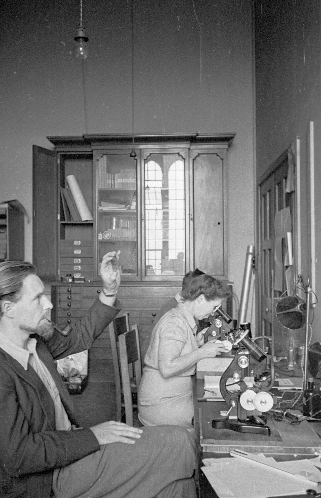

Accueil
Bienvenue sur ce site consacré à Marie Curie, une scientifique majeure qui a profondément marqué l’histoire des sciences et des techniques.
Ce mini-site présente sa vie, ses découvertes scientifiques, ses travaux sur la radioactivité ainsi que son impact dans le monde médical et scientifique.

Ce site est organisé en plusieurs pages :
L’objectif de ce site est de comprendre pourquoi Marie Curie est une personnalité importante dans l’histoire des sciences.
Ses recherches ont permis de faire progresser la physique, la chimie et la médecine. Elle est aussi devenue un symbole pour la place des femmes dans les sciences.
Pour découvrir le site, utilisez le menu situé à gauche. Il permet d’accéder aux différentes pages et à certaines sections importantes.
CHEBLAL Yasmine - BOUROUINA Nour-Elhouda - L1 Informatique